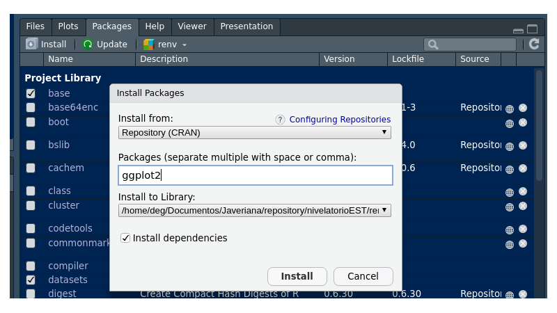
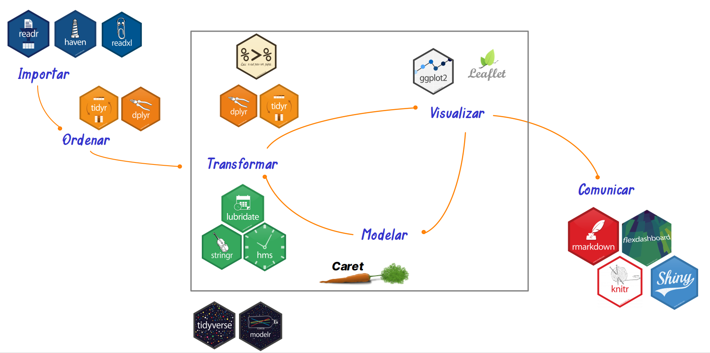

Un paquete es una colección de funciones, datos y documentación que agrega capacidades a R. Hay paquetes para hacer gráficos, leer archivos de Excel, ajustar modelos o crear documentos.
Funcionan como las aplicaciones de un celular: una aplicación se
instala una sola vez y se abre cada
vez que se va a usar. En R, un paquete se instala con
install.packages() y se abre en cada sesión con
library().
Muchas personas usan las dos palabras como sinónimos, pero no significan lo mismo:
ggplot2.La función se llama library(), pero lo que recibe es el
nombre de un paquete. En este curso se usa la palabra
paquete. Para ver dónde están las bibliotecas de su
computador puede ejecutar .libPaths().
Al instalar R ya quedan disponibles varios paquetes,
y algunos se cargan automáticamente. Por eso mean() o
plot() funcionan sin instalar nada. La función
search() muestra lo que está activo en la sesión:
search()[1] ".GlobalEnv" "package:stats" "package:graphics"
[4] "package:grDevices" "package:utils" "package:datasets"
[7] "package:methods" "Autoloads" "package:base" | Paquete | Para qué sirve | Ejemplos de funciones |
|---|---|---|
base |
Funciones esenciales del lenguaje | sum(), c(),
factor() |
stats |
Estadística: pruebas, modelos y distribuciones | lm(), t.test(),
rnorm() |
graphics |
Gráficos básicos | plot(), hist() |
utils |
Herramientas generales, como leer archivos e instalar paquetes | read.csv(),
install.packages() |
datasets |
Bases de datos de ejemplo | iris, mtcars |
| Repositorio | Qué contiene | Cómo se instala |
|---|---|---|
| CRAN | El repositorio principal, con más de 25 000 paquetes | install.packages("paquete") |
| Bioconductor | Paquetes para bioinformática | BiocManager::install("paquete") |
| GitHub | Paquetes en desarrollo o creados por grupos y personas, como el del curso | remotes::install_github("usuario/paquete") |
Las vistas de tareas de CRAN organizan los paquetes por tema y ayudan a encontrar uno para una tarea concreta.
Hay dos formas. La instalación se hace una sola vez en cada computador, salvo que se quiera actualizar el paquete.
1. Desde la consola. Es la forma más común. El nombre del paquete va entre comillas:
install.packages("ggplot2")2. Desde RStudio. En la pestaña Packages, se hace clic en Install, se escribe el nombre y se confirma.

Ventana para instalar paquetes en RStudio
Un paquete puede necesitar otros para funcionar, llamados dependencias. R los instala de forma automática, así que es normal ver mensajes sobre varios paquetes.
Instale los paquetes en la consola y no deje
install.packages() en sus scripts o archivos
.Rmd. De lo contrario, el paquete se instalaría de nuevo
cada vez que se ejecute el código.
Instalar un paquete no lo activa. En cada sesión nueva de
R hay que cargarlo con library(), esta vez
sin necesidad de comillas:
library(ggplot2)
ggplot(iris, aes(x = Sepal.Length, y = Petal.Length)) +
geom_point()| Acción | Función | ¿Cuándo? | ¿Lleva comillas? |
|---|---|---|---|
| Instalar | install.packages() |
Una vez en cada computador | Sí |
| Cargar | library() |
En cada sesión de R | No es necesario |
Si el paquete no está instalado, library() genera un
error:
library(paquetequenoexiste)Error in library(paquetequenoexiste): there is no package called 'paquetequenoexiste'Con paquete::función() se usa una función sin cargar
todo el paquete. También deja claro de dónde viene. Es lo que se hizo
con knitr::kable() en la página RMarkdown.
knitr::kable(head(iris, 2))| Sepal.Length | Sepal.Width | Petal.Length | Petal.Width | Species |
|---|---|---|---|---|
| 5.1 | 3.5 | 1.4 | 0.2 | setosa |
| 4.9 | 3.0 | 1.4 | 0.2 | setosa |
Dos paquetes pueden tener funciones con el mismo nombre. Si ambos
están cargados, se
usa la del último paquete cargado, y la otra queda
enmascarada (masked). R lo
advierte con un mensaje. Por ejemplo, dplyr tiene una
función filter(), y stats también:
library(dplyr)
Attaching package: 'dplyr'The following objects are masked from 'package:stats':
filter, lagThe following objects are masked from 'package:base':
intersect, setdiff, setequal, unionEste mensaje no es un error. Indica que, desde ahora,
filter() será la de dplyr. Para usar una
versión específica se escribe el nombre del paquete:
dplyr::filter(iris, Sepal.Length > 7.6) Sepal.Length Sepal.Width Petal.Length Petal.Width Species
1 7.7 3.8 6.7 2.2 virginica
2 7.7 2.6 6.9 2.3 virginica
3 7.7 2.8 6.7 2.0 virginica
4 7.9 3.8 6.4 2.0 virginica
5 7.7 3.0 6.1 2.3 virginicaEsto importa, por ejemplo, con select(). Si se carga
MASS después de dplyr, select()
deja de ser la de dplyr, y el código puede fallar con un
mensaje confuso. La solución es escribir
dplyr::select().
| Quiero saber | Instrucción |
|---|---|
| Qué funciones tiene | help(package = "ggplot2") |
| Cómo se usa una función | ?ggplot |
| Si tiene guías con ejemplos | vignette(package = "ggplot2") |
| Qué versión tengo | packageVersion("ggplot2") |
| Qué paquetes tengo instalados | rownames(installed.packages()) |
| Qué está cargado en la sesión | sessionInfo() |
| Cómo citarlo en un informe | citation("ggplot2") |
Cuando un informe usa un paquete, conviene citarlo. La función
citation() entrega la referencia. Sin argumentos, muestra
cómo citar R.
citation()
citation("ggplot2")Los paquetes cambian con el tiempo. Se actualizan con el botón Update de la pestaña Packages o con esta instrucción, que revisa cuáles tienen una versión más reciente:
update.packages()No conviene actualizar en medio de una entrega, porque un cambio podría alterar el funcionamiento del código.
¿Qué problema resuelve?
install.packages() solo busca en CRAN. Un paquete publicado
únicamente en GitHub, como el del curso, necesita otra herramienta.
¿Qué hace? El paquete remotes
permite instalar paquetes desde GitHub. Su función
install_github() recibe el texto
"usuario/repositorio" y también revisa las
dependencias.
¿Cómo se usa?
install.packages("remotes") # solo la primera vez
remotes::install_github("usuario/paquete")Si durante la instalación pregunta si desea actualizar otros paquetes, puede elegir la opción None para omitirlo.
¿Qué es? paqueteMETODOS fue creado para
este curso. Reúne bases de datos, funciones y tutoriales, de modo que
todos trabajen con la misma información. No está en CRAN.
¿Cómo se instala? Se ejecuta una sola vez:
install.packages("remotes")
remotes::install_github("Centromagis/paqueteMETODOS")¿Cómo se usa? Se carga y luego se llama la base de datos:
library(paqueteMETODOS)
data("CarreraLuz22")
head(CarreraLuz22)| Base | Tamaño | Contenido |
|---|---|---|
CarreraLuz22 |
1,922 × 7 | Atletas de la carrera La Luz 2022 en Cali |
CarreraLuz22F |
744 × 7 | Mujeres de la carrera |
CarreraLuz22M |
1,178 × 7 | Hombres de la carrera |
vivienda |
8,322 × 13 | Viviendas de Cali |
vivienda_faltantes |
8,330 × 13 | Viviendas de Cali con datos faltantes |
vivienda4 |
1,706 × 5 | Viviendas de Cali, con menos variables |
rotacion |
1,470 × 24 | Empleados de una compañía |
rotacionNA |
1,470 × 25 | Empleados de una compañía con datos faltantes |
inflacion2022 |
360 × 6 | Inflación en Colombia hasta 2022 |
seriesCOL |
74 × 3 | Inflación y tasa de cambio de Colombia |
ventas |
15 × 3 | Ventas de empleados |
arboles |
90 × 4 | Características de árboles |
biomasa |
90 × 8 | Biomasa de árboles |
El paquete también incluye las bases CarreraLuz22_c1F a
CarreraLuz22_c5F para mujeres y
CarreraLuz22_c1M a CarreraLuz22_c5M para
hombres. Son acumuladas: por ejemplo, CarreraLuz22_c3F
contiene a las mujeres de las categorías 3, 4 y 5. Para trabajar con una
sola categoría se filtra CarreraLuz22.
Estas son algunas de sus funciones. Los argumentos son estos:
z es el percentil de la normal, como 1.96 para 95 % de
confianza; s2 es la varianza; p es la
proporción y e es el error máximo.
| Función | Para qué sirve |
|---|---|
Cnk(n, k) |
Combinaciones de n elementos tomados de a k |
Pnk(n, k) |
Permutaciones de n elementos tomados de a k |
sizemu(z, s2, e) |
Tamaño de muestra para estimar una media |
sizep(z, p, e) |
Tamaño de muestra para estimar una proporción |
adjusted_size(n, N) |
Ajusta el tamaño de muestra n a una
población de tamaño N |
Ejemplos con sus resultados:
Cnk(10, 2) # 45
Pnk(10, 2) # 90
sizemu(1.96, 245, 2) # 235.298
sizep(1.96, 0.5, 0.02) # 2401
adjusted_size(385, 500) # 217.7602Cada etapa de un análisis cuenta con paquetes especializados.

Etapas del análisis de datos y paquetes empleados
El tidyverse es una colección de paquetes diseñados para trabajar juntos. Con una sola instrucción se instala todo el grupo:
install.packages("tidyverse") # solo la primera vez
library(tidyverse) # activa los paquetes principaleslibrary(tidyverse) activa estos paquetes:
| Paquete | Para qué sirve |
|---|---|
ggplot2 |
Crear gráficos |
dplyr |
Filtrar, seleccionar, ordenar y resumir datos |
tidyr |
Ordenar la estructura de las tablas |
readr |
Leer archivos de texto como .csv |
tibble |
Trabajar con una versión moderna del data frame |
purrr |
Aplicar funciones a muchos elementos |
stringr |
Trabajar con textos |
forcats |
Trabajar con factores |
lubridate |
Trabajar con fechas y horas |
Otros paquetes, como readxl para archivos de Excel y
haven para SPSS, Stata y SAS, se instalan con el tidyverse,
pero cada uno se carga con su propio library().
| Paquete | Para qué sirve | Tema |
|---|---|---|
rmarkdown, knitr |
Generar documentos y tablas | Informes |
tidyverse |
Importar, transformar y graficar datos | Procesamiento y gráficas |
readxl |
Leer archivos de Excel | Importar |
summarytools |
Obtener tablas de frecuencia y resúmenes descriptivos | Análisis de datos |
e1071 |
Calcular asimetría y curtosis, entre otras funciones | Indicadores de forma |
kableExtra |
Dar mejor formato a las tablas | Tablas |
plotly |
Convertir gráficos en interactivos | Gráficas |
gganimate |
Crear gráficos animados | Gráficas |
naniar, VIM |
Explorar y visualizar datos faltantes | Ordenar |
zoo |
Trabajar con series de tiempo y completar datos faltantes | Ordenar |
Para instalarlos de una sola vez:
install.packages(c("rmarkdown", "tidyverse", "readxl", "summarytools", "e1071",
"kableExtra", "plotly", "gganimate", "naniar", "VIM", "zoo"))Varios paquetes pueden hacer lo mismo. Antes de elegir uno conviene revisar lo siguiente:
Que un paquete esté publicado no garantiza que el método sea el adecuado para sus datos. Esa decisión sigue siendo del analista.
| Problema | Causa | Solución |
|---|---|---|
there is no package called 'ggplot2' |
El paquete no está instalado | Ejecutar install.packages("ggplot2") |
could not find function "ggplot" |
El paquete no está cargado | Ejecutar library(ggplot2) |
object 'ggplot2' not found al
instalar |
Faltan las comillas | Escribir install.packages("ggplot2") |
package 'x' is not available |
El nombre está mal escrito o no está en CRAN | Revisar mayúsculas y el nombre |
namespace ... is already loaded |
Se quiere actualizar un paquete en uso | Reiniciar R e intentar de nuevo |
| La función da un error extraño | Otra función la enmascaró | Usar paquete::función() |
Un estudiante abre RStudio y ejecuta el siguiente
código. Obtiene el error could not find function "ggplot",
aunque ayer el código funcionó. ¿Qué pasó y cómo se corrige?
ggplot(iris, aes(Sepal.Length, Petal.Length)) + geom_point()El paquete sigue instalado, pero la sesión es nueva y no se ha
cargado. Se debe agregar library(ggplot2) al inicio del
script. No hace falta instalarlo de nuevo.
Encuentre el error en cada línea.
install.packages(ggplot2)
install.packages(install.packages("dplyr"))
library(update.packages())
library(GGPLOT2)install.packages("ggplot2") # faltaban las comillas
install.packages("dplyr") # estaba repetida la función
update.packages() # no va dentro de library()
library(ggplot2) # R distingue mayúsculas de minúsculasSin cargar ningún paquete adicional, una persona ejecuta
filter(iris, Species == "setosa") y obtiene un error. ¿Qué
función se está usando realmente? ¿Cómo se soluciona?
Se está usando stats::filter(), que sirve para series de
tiempo. Hay que usar la de dplyr, con
library(dplyr) o escribiendo el nombre del paquete:
head(dplyr::filter(iris, Species == "setosa"), 2) Sepal.Length Sepal.Width Petal.Length Petal.Width Species
1 5.1 3.5 1.4 0.2 setosa
2 4.9 3.0 1.4 0.2 setosaInstale paqueteMETODOS. Calcule cuántas personas de la
categoría 4. Veteranos B hay en CarreraLuz22 y
su tiempo promedio en minutos. Después use sizep() para
hallar el tamaño de muestra que estima una proporción con 95 % de
confianza, p = 0.5 y error de 0.05.
library(paqueteMETODOS)
library(dplyr)
data("CarreraLuz22")
CarreraLuz22 |>
filter(categoria == "4. Veteranos B") |>
summarise(personas = n(), promedio = mean(timerun / 60))
sizep(1.96, 0.5, 0.05)Son 227 personas, con un promedio de 64.5 minutos, y
sizep() da 384.16, por lo que se necesitan 385. El tamaño
de muestra se redondea hacia arriba.
library(),
install.packages() y update.packages().Última revisión: 4 de noviembre de 2026.